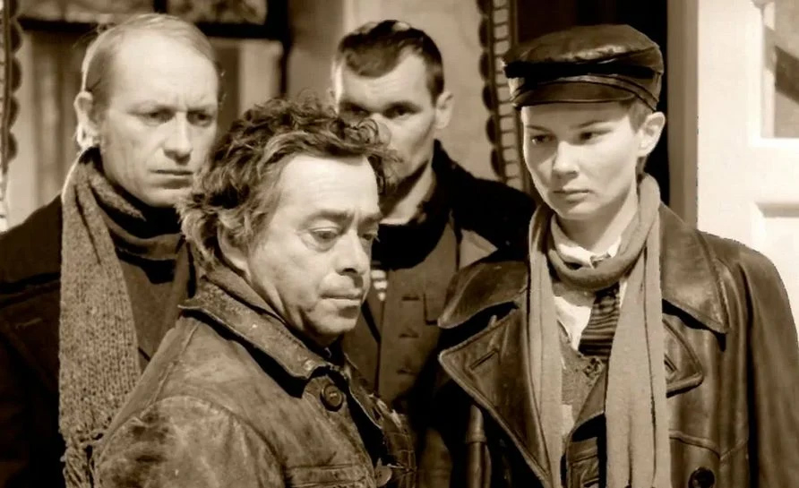
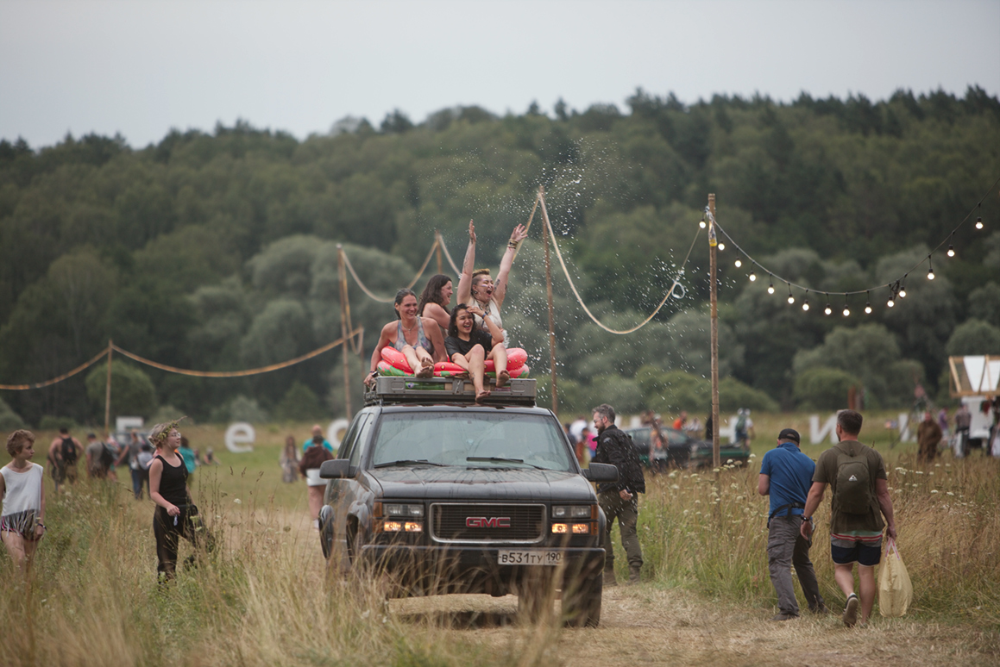
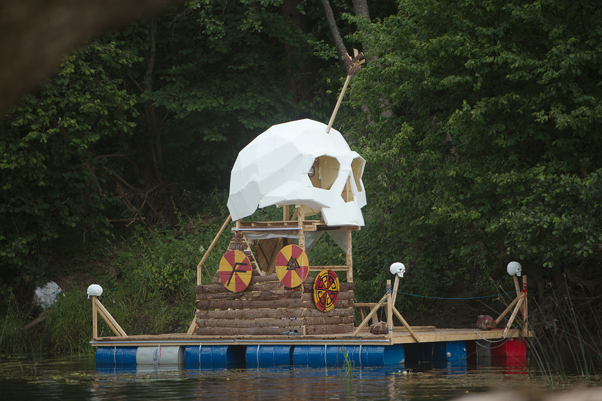
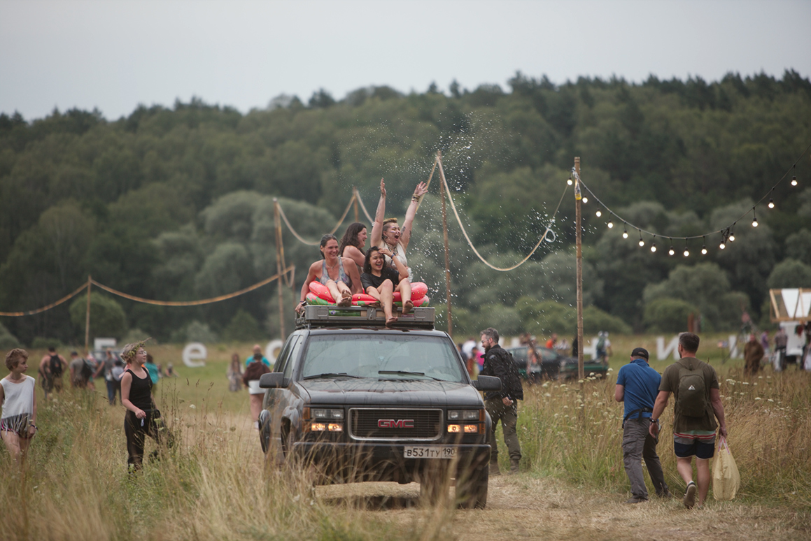
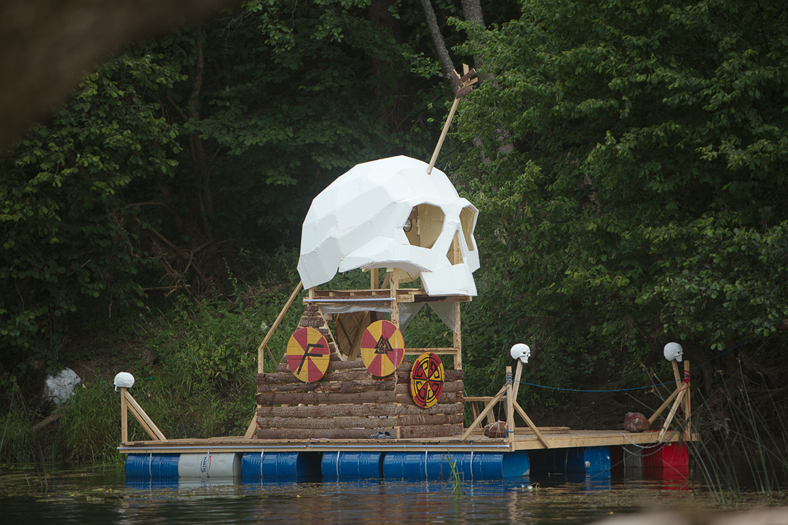

Это реально выглядело так, будто там нет ничего кроме заборов и технических зон. 12 июля не готовы принять гостей, 13 июля там нет места чтобы воткнуть палатку и поспать. Если учесть часть дороги и время побегать по осмотреться, то чтобы место под палатку найти, я где-то меньше суток потратил. Места просто небыло. Тут поставить нельзя, сюжа нельзя, здесь не ходи. Я дико не люблю такие вещи, но тут их довели до какого-то абсолюта. Я ходил ходил, смотрел. Нашлись какие-то места и там почему-то почти везде насрано, и на каждом шагу колючая проволока. Вобщем было тааак весело, что на кэмпинг я потратил больше сил и времени, чем на сам фестиваль. Во что-то там вляпался, пару раз в темноте нашапмурился ногами на эту самую проволоку. Ну это просто ёбанное днище какое-то. 14 числа, я уже ходил по поляне, и мне как-то в гробу уже хотелось видеть этот фестиваль и всех кто на него приехал.
Топологию месности изучил уже дома, как оказалось фестиваль в одном месте, кемпинг в другом.

Представте себе дорогу длиной в километр, которая в каком-то моменте идёт в многометровую гору. И ещё зачем яму на входе выкопали, в которой я чуть ноги ночью не отломал. А вам надо нагрузить на себя несколько киллограм всяких железок, и такскать их непрерывно, и пробежать по этой дороге раз пятсот. Проблема не в том что много сил или времени потратится, не в том железо, которое как Третьяковская галлерея стоит, на таком отделении из палатки могут вынести. Проблема, мне вообще не впладлу, но такой нагрузки в городе пару недель на костылях ходить придётся, и вот это совсем не хочется делать. Сколько бы лет я не ездил по лесу, есть разумных предел и к бесконечным нагрузкам я не привык.
Ради интереса, брал с собой телефон. 17 июля. Примерно три часа, бухал с карусельщиками. Спал. Ехал домой прямым рейсом до Москвы и метро. До автобуса меня довезли. Телефон за 17 число показывает 41809 шагов (23% ходьбы приложение воспринимало как бег). Любой косяк с выбором кэмпинга, легко увеличивает эту нагрузку в несколько раз, хотя и по цифрам она будет выглядеть как бы меньше.
Я тут между делом вспомнил первую бессоницу, она выглядела как-то так. Сделать атмосферу, можно даже из костылей.
Вот так я насмотрелся телескоп в поле, взял фотик и сфотал свои пятна на солнце. Эти пятна они конечно в любом городе пятна. Но считайте, что это пятна на солнце бессоницы.
Картина - нерг на рассвете. Вот он получился, такой, я в него не попал. Меня очень сильно отвлекли в этот момент.
Вобщем и похуй, фотография - не шахматы.
А так я просто навалю тут картинки одной кучкой, т.к. оно времени моего не стоит:

 


